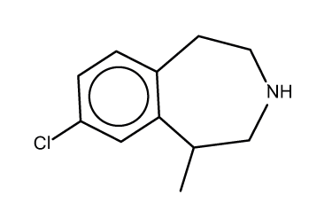
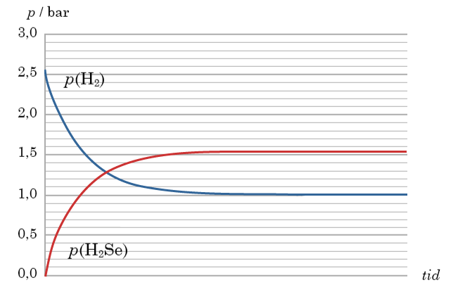
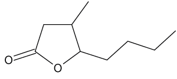
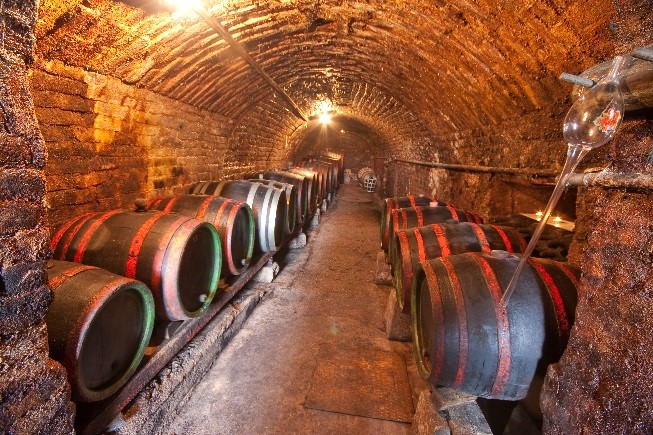
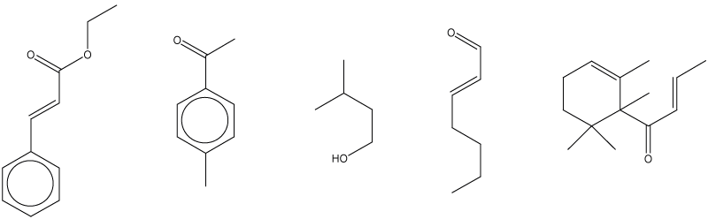
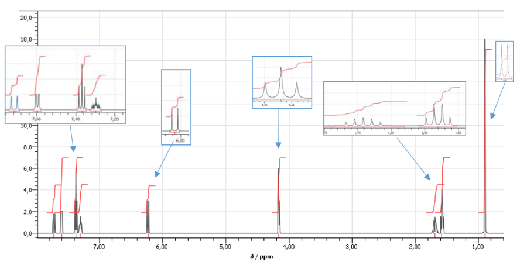
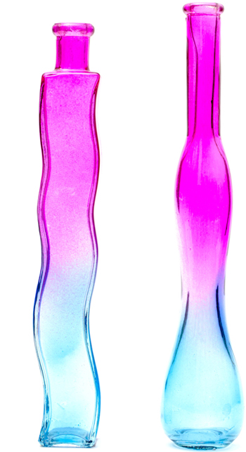

Kemi A
Digital eksamensopgave med adgang til internettet
Vejledning
Prøven
Opgavesættet består af 4 opgaver med i alt 16 delopgaver.
Alle hjælpemidler er tilladt.
Opgavebesvarelsen
Din opgavebesvarelse skal afleveres i et samlet dokument.
Kildehenvisning
Du skal angive kildehenvisning til informationer, data for kemiske forbindelser og lignende, som ikke er givet i opgaveteksten. Benytter du samme kilde i hovedparten af opgavebesvarelsen, kan du angive en generel kildehenvisning i opgavebesvarelsen. Du skal fortsat henvise til andre benyttede kilder.
Bedømmelse
Ved bedømmelsen af din besvarelse lægges vægt på, at du er i stand til at anvende din kemiske viden på nye problemstillinger, og at din besvarelse er ledsaget af
| - | forklarende tekst | |
| - | reaktionsskemaer | |
| - | beregninger | |
| - | figurer og | |
| - | kemiske formler |
I bedømmelsen vægtes alle delopgaver ens.
Der gives én karakter på baggrund af en helhedsbedømmelse.
Opgave 1: Fedmemedicin
|
Fedme udgør et alvorligt sundhedsproblem i USA, hvor 40 % af befolkningen er svært overvægtige. På verdensplan bliver der også flere og flere fede mennesker, og WHO har siden 2000 talt om en global fedmeepidemi.
I juni 2012 blev lorcaserin godkendt af den amerikanske lægemiddelstyrelse som fedmemedicin til patienter med BMI over 30, eller til patienter med BMI over 27, som samtidig lider af følgesygdomme fx diabetes eller forhøjet blodtryk.

lorcaserin Figur 1 |
Colourbox.com
|
Figur 1.mrv Figur 1.sk2
En mættet vandig opløsning af lorcaserin indeholder 0,0709 g lorcaserin i 1,00 L opløsning ved 25 °C.
| a) | Beregn den formelle stofmængdekoncentration af lorcaserin i den mættede vandige opløsning. |
|
| b) | Beregn pH i opløsningen af lorcaserin ved 25 °C. |
Lorcaserin stimulerer nogle serotoninreceptorer i hjernen og virker ved at give en større mæthedsfornemmelse, så patienten spiser mindre.
Forskere har undersøgt omsætningen af lorcaserin i rottehjerner. Rotterne indtog 10 mg lorcaserin pr. kg rotte.
I undersøgelsen blev massen af lorcaserin i 1,0 g rottehjerne fulgt som funktion af tiden. Resultaterne er gemt i følgende datafiler.
Excel-fil.DK Excel-fil.USA Kommasepareret fil Mellemrumsepareret fil
| c) | Gør rede for, at omsætningen af lorcaserin i rottehjerner er af 1. orden med hensyn til lorcaserin, efter at den maksimale koncentration er opnået. Bestem halveringstiden for lorcaserin i rottehjerner. |
Man kan anvende lorcaserins fordeling mellem octan-1-ol og vand til at vurdere, i hvilket omfang lorcaserin kan passere gennem upolære membraner i kroppen.
Fordelingsforholdet, D, som er forholdet mellem lorcaserins formelle koncentrationer i de to faser, er givet ved
|
D = clorcaserin(octan-1-ol)clorcaserin(aq)
|
| d) | Tegn en graf, som viser logD for lorcaserin som funktion af pH i vandfasen, og bestem D for lorcaserin ved blodets pH 7,4 ved 25 °C. Forklar grafens forløb ud fra lorcaserinmolekylets struktur og stoffets syre-base-egenskaber. |
Opgave 2: Materialer til solceller
|
Solceller spiller en vigtig rolle i bæredygtig og klimavenlig energiforsyning. Moderne solceller kan typisk udnytte 15 % af energien i sollyset. Et meget anvendt materiale i solceller er stoffet kobberindiumselenid, CuInSe2. Indium er et sjældent metal, der fås som biprodukt ved udvinding af andre metaller, især zink og bly.
Udvindingen af indium forløber i flere trin. I det sidste trin tilsættes zink til en vandig opløsning af indium(3+)chlorid, InCl3. Herved dannes metallet indium. |
Colourbox.dk
|
| In3+(aq) + Zn(s) → In(s) + Zn2+(aq) | (1) |
| a) | Angiv reaktionstypen for reaktion 1. Afstem reaktionsskemaet. |
I 100 L af en 0,88 m opløsning af indium(3+)chlorid omdannes alt indium(3+) til indium ved reaktion 1.
| b) | Beregn massen af den mængde zink, der forbruges ved omdannelsen. |
CuInSe2 fremstilles ved at lade en legering af kobber og indium reagere med dihydrogenselenid, H2Se.
Dihydrogenselenid fremstilles ved en reaktion mellem dihydrogen og selen, hvor der indstilles en ligevægt.
| H2(g) + Se(l) ⇌ H2Se(g) | (2) |
Reaktionen foregår normalt ved en temperatur mellem 500 °C og 600 °C.
| Termodynamiske data ved 25 °C |
|
||
| Se(l) | 6,16 | |
| H2Se(g) | 29,0 |
| c) | Beregn ΔH° for reaktion 2. Argumenter for, i hvilken retning ligevægten forskydes, hvis temperaturen sænkes fra 600 °C til 500 °C. |
Selen anbringes i en beholder, og der tilsættes dihydrogen. Beholderen lukkes og opvarmes til 500 °C, og temperaturen holdes konstant. Der ses bort fra volumenet af selen.
Reaktionen mellem dihydrogen og selen følges ved at bestemme partialtrykkene, p, af dihydrogen og dihydrogenselenid som funktion af tiden efter reaktionens start. Resultaterne er afbildet nedenfor.

| d) | Forklar grafernes forløb. Bestem ligevægtskonstanten ved 500 °C. |
Opgave 3: Aromastoffer i whisky
|
Whiskylacton dufter af kokosnød og er et af de karakteristiske aromastoffer i whisky.
 whiskylacton
Figur 2 |

Colourbox.com
|
Figur 2.mrv Figur 2.sk2
| a) | Tegn alle stereoisomere former af whiskylacton, så deres forskelle i rumlig opbygning fremgår. Angiv, hvilke strukturer der er enantiomere par (hinandens spejlbilleder). |
Mange forskellige aromastoffer bidrager til duften af en whisky. Nedenfor ses strukturformler for fem af disse aromastoffer, og hvad stofferne dufter af.
|  |
| A frugt |
B mandel |
C malt |
D grønt |
E kogt æble |
Figur 3
Figur 3.mrv Figur 3.sk2
Det systematiske navn for A er trans-ethyl-3-phenylprop-2-enoat.
| b) | Forklar det systematiske navn for A. |
|
| c) | Anfør et reaktionsskema for hydrolyse af A. De organiske stoffer anføres med strukturformel. |
De fem aromastoffer er fordelt i fem glas, 1, 2, 3, 4 og 5, med et aromastof i hvert glas.
En elev gennemfører en række kemiske tests på stofferne, som vist i filmen nedenfor.
| d) | Argumenter for, hvordan de fem aromastoffer er fordelt i glassene 1, 2, 3, 4 og 5. |
Et af produkterne fra hydrolysen af A anvendes til fremstilling af en anden ester.
Nedenfor ses 1H-NMR-spektret ved 500 MHz for esteren.

Figur 4
| e) | Bestem strukturen for esteren. Argumenter ud fra integralkurve, kemiske skift og koblingsmønstre. |
Opgave 4: Cobaltforbindelser i ligevægt
|
Gennem årtusinder har cobaltforbindelser fundet anvendelse som farvestoffer i smykker, keramik, emalje og glas. Cobaltforbindelser kan have forskellige farver, bedst kendt er nok ”koboltblå”.
En rødlig cobaltforbindelse har formlen CoCl2⋅6H2O.
Når CoCl2⋅6H2O opløses i propan-2-ol, sker en fuldstændig omdannelse til forbindelsen B, CoCl(CH3CHOHCH3)3+, som er blå. En stamopløsning af B har koncentrationen 0,0115 m. Denne opløsning fortyndes, som vist i filmen nedenfor. |

Colourbox.com
|
| b) | Beregn stofmængdekoncentration af B i den fortyndede opløsning. |
Når en opløsning af B tilsættes methanol dannes forbindelsen R, CoCl(CH3CHOHCH3)2(CH3OH)3+, som er rød. Der indstilles en ligevægt
| B + 3 CH3OH ⇌ R + CH3CHOHCH3 |
(1) |
| blå | rød |
Den aktuelle koncentration af B i ligevægtsblandingen bestemmes spektrofotometrisk som vist i filmen nedenfor. Ved den spektrofotometriske analyse udnytter man, at R ikke absorberer ved bølgelængder over 600 nm.
Datafiler for absorptionsspektrene er gemt nedenfor.
Excel-fil.DK Excel-fil.USA Kommasepareret fil Mellemrumsepareret fil
| c) | Beregn de aktuelle koncentrationer af B og af R i ligevægtsblandingen. |
Filer til opgaverne
| Filnavn | Opgave | Figur | Beskrivelse |
| 164072_figur1.mrv | 1 | 1 | MarvinSketch fil med strukturformel |
| 164072_figur1.sk2 | 1 | 1 | ChemSketch fil med strukturformel |
| 164072_opg1_excel_dk.xls | 1 | - | Excel datafil, dansk |
| 164072_opg1_excel_usa.xls | 1 | - | Excel datafil, usa |
| 164072_opg1_kommasepareret.txt | 1 | - | Kommasepareret fil |
| 164072_opg1_mellemrumsepareret.txt | 1 | - | Mellemrumsepareret fil |
| 164072_figur2.mrv | 3 | 2 | MarvinSketch fil med strukturformel |
| 164072_figur2.sk2 | 3 | 2 | ChemSketch fil med strukturformel |
| 164072_figur3.mrv | 3 | 3 | MarvinSketch fil med strukturformler |
| 164072_figur3.sk2 | 3 | 3 | ChemSketch fil med strukturformler |
| 164072_opg4_excel_dk.xls | 4 | - | Excel datafil, dansk |
| 164072_opg4_excel_usa.xls | 4 | - | Excel datafil, usa |
| 164072_opg4_kommasepareret.txt | 4 | - | Kommasepareret fil |
| 164072_opg4_mellemrumsepareret.txt | 4 | - | Mellemrumsepareret fil |
Klik her for at downloade alle filer.
Teknisk hjælp
For at åbne .mrv filerne i de pågældende opgaver, se her.
.sk2 filerne kan i de pågældende opgaver åbnes direkte ved klik på linket Figurx.sk2.
For at udpakke zip-filen med alle filer, så disse bliver redigerbare, se her.
Til at åbne .mrv filerne skal man bruge MarvinSketch, se her hvordan filerne åbnes.
Til at åbne .sk2 filerne skal man bruge ChemSketch, se her hvordan filerne åbnes.